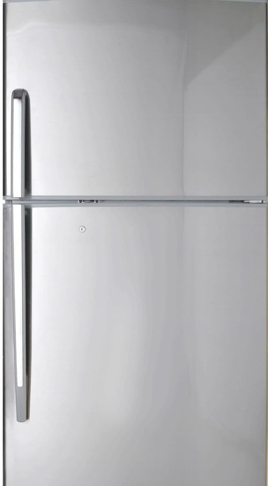
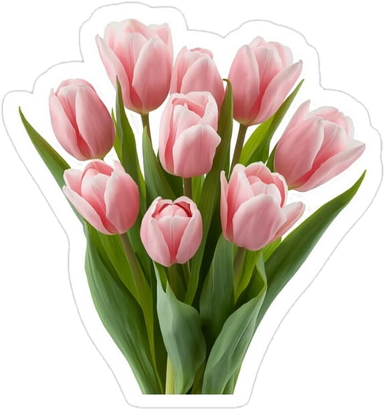
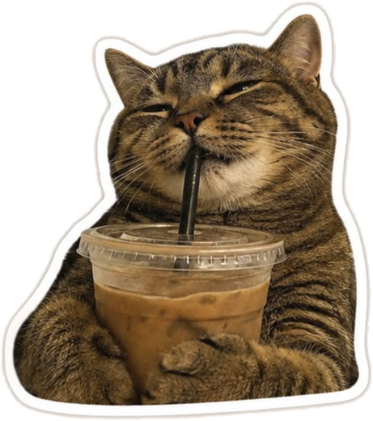
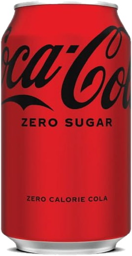
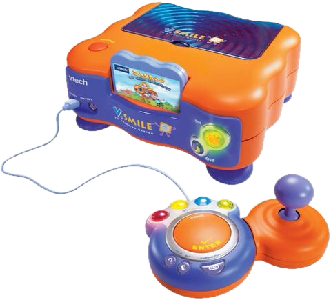
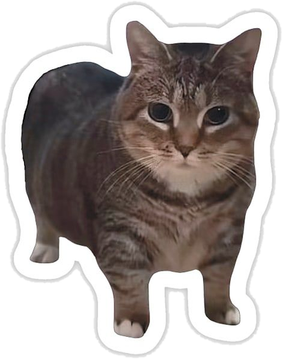
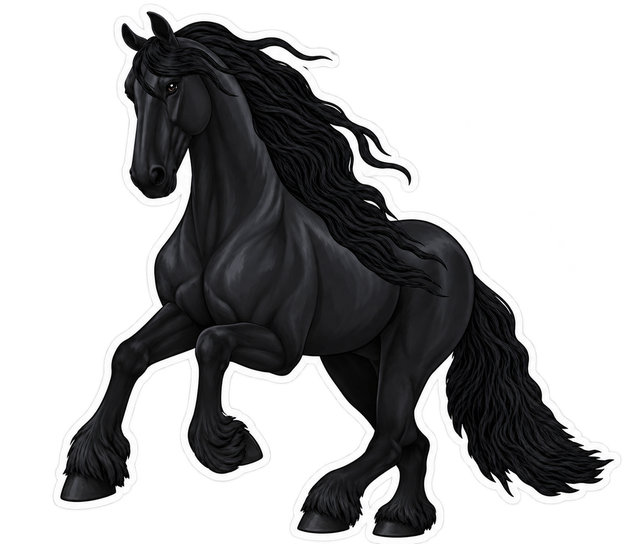

SOY SANDRA
JIMÉNEZ RAMIRO
Con qué
trabajo.
Me gusta moverme entre código, sistemas y herramientas visuales para convertir una idea en algo jugable.
Programo en C# con Unity desde hace dos años y llevo cinco con la programación orientada a objetos. Mi formación en Ingeniería Informática me da base en estructuras de datos, bajo nivel (C y ensamblador) y resolución de problemas.
DESARROLLO DE VIDEOJUEGOS
- Unity 3D/2D
- C#
- GDD
- 3ds Max
- Substance Painter
- Marmoset Toolbag
PROGRAMACIÓN E INFORMÁTICA
- C
- JavaScript
- HTML
- CSS
- SQL
- Ensamblador
- POO
- MATLAB
- RStudio
- Pentesting
- Troubleshooting
HERRAMIENTAS Y CONTROL DE VERSIONES
- Git
- GitHub
- Photoshop
- Illustrator
IDIOMAS
- Español (Nativo)
- Inglés (B2+)
Cómo
trabajo.
Las habilidades que no vienen con icono.
He trabajado en equipo, en pareja y en solitario, siempre con entregas de un cuatrimestre: sé organizarme con metodologías ágiles y cumplir plazos.
Trabajo en equipo
Nivel 9Comunicación
Nivel 8Resolución de problemas
Nivel 9Creatividad
Nivel 8Adaptabilidad
Nivel 8Gestión del tiempo
Nivel 7
Mis proyectos.








Cosas que
me gustan.
Es mi nevera. Mueve las pegatinas a donde quieras.
Pulsa una pegatina
y descubre por qué me gusta.
CONTÁCTAME ✦ CONTÁCTAME ✦ CONTÁCTAME ✦ CONTÁCTAME ✦
CONTÁCTAME ✦ CONTÁCTAME ✦ CONTÁCTAME ✦ CONTÁCTAME ✦
¿Creamos algo
juntos?
Busco prácticas o mi primer puesto como programadora de videojuegos. Respondo en menos de 48 horas.